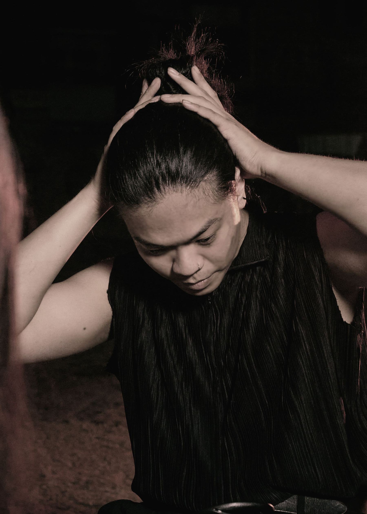

Hanoi, Vietnam Moving image, sound, real-time systems Available for commission
WorkUpcomingSoundFragmentA reading
Nothing held
Every number carries a reading
Ten hold a work, three a track. The rest hold nothing, and say so. The board is dealt again on every visit; the readings stay with their numbers.
My work asks what holds together when nothing is at the middle. A structure stays standing not because something commands it from a center, but because its parts keep answering one another.
About my work
info@qaun.homes
Qaun Huyen
Interdisciplinary artist Vũ Lê Hoàng — Quản Huyền
B.2002, Hanoi, Vietnam Based in Hanoi, Vietnam
Statement
My work asks what holds together when nothing is at the middle. A structure stays standing not because something commands it from a center, but because its parts keep answering one another. Remove the assumption of a center and what remains is not disorder but a slower order — distributed, harder to own, maintained rather than governed. What interests me is how hard people resist this: how reliably, placed in a field with no middle, we go on looking for one.
Gambling is where I find this most exposed. Not as vice or spectacle, but as a widely shared Vietnamese structure of feeling — xóc đĩa, đá gà, bầu cua, tá lả, đề and lô — an informal architecture of chance running underneath the formal one. What operates in these games is a distribution: independent events, weighted odds, no memory, no middle. What the player looks for is a center: the pattern, the hand that decides, the number that is due.
Two Vietnamese words hold the whole of this. Suýt — the almost, the outcome landing one position short — which is not a failure but a promise, and is engineered to feel like one. And gỡ — to play on in order to recover what was lost — which is the belief that the last round left a debt, that something is keeping the account, that the field owes and can be made to pay. Suýt produces the sense of being owed; gỡ is the going out to collect. Together they are the exact shape of the appetite for a center, and they survive every proof that no center exists.
I build audiovisual systems that owe nothing. No frame is authored, no node holds command; images and sound are outcomes of conditions negotiating with one another, held at the point just before they resolve. Nothing accumulates toward a payout, and each state is a round rather than a step. Drift and breakage are kept rather than corrected. To decentralise is not to dissolve — it is to redistribute attention, authorship, labour, and the right to decide what a room is for. My work stays with what remains when there is no house to appeal to and no center to blame: only the field, the next round, and the people who stay for it.
Qaun Huyen

Biography
Vũ Lê Hoàng, who works as Qaun Huyen, was born in Hanoi, Vietnam, in 2002. He studied Printmaking at the Vietnam University of Fine Arts, Hanoi.
He works across moving image, sound and real-time systems. His practice takes Vietnamese vernacular gambling — xóc đĩa, đá gà, bầu cua, tá lả, đề and lô — as a working model of decentralised systems: fields in which outcomes are distributed, no center governs, and players persist in searching for one regardless. He builds audiovisual works that are run rather than composed, in which no frame is authored and no node holds command, and in which drift and breakage are kept as material rather than corrected.
His work has been exhibited in Hanoi, Vietnam, at Ngã Art Space, where he presented with 34 Studio in 2023, and at →← in 2025. He performs live audiovisual and noise sets under the collaborative aliases N//X//Q and TwoThirds, including at Otto Bar, VAR Gaming and Men HUB in Hanoi, and on Aaja Radio (London, UK).
He is a co-founder of 34 Studio (2021) and NetChùa! (2026), both self-organised and run without a single director. He works as a 3D and motion designer for clients including MTG (Stockholm, SE), EA (Singapore, SG) and Chatoyer (Hanoi, VN). He lives and works in Hanoi.